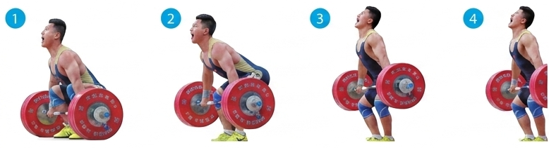
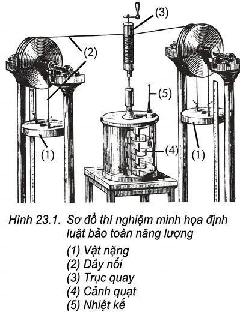
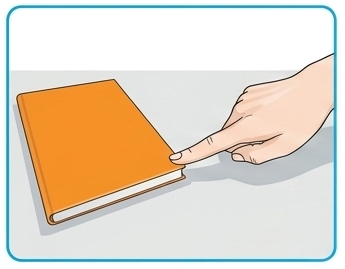
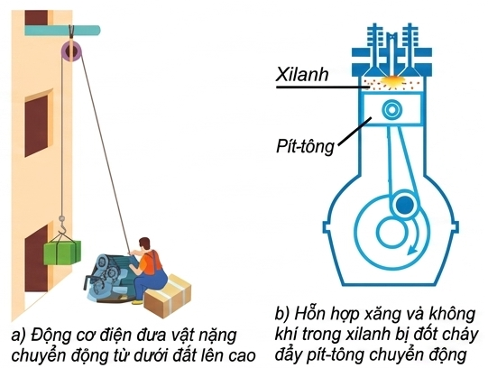
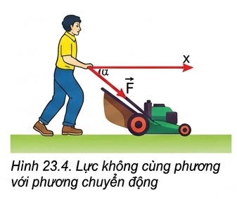
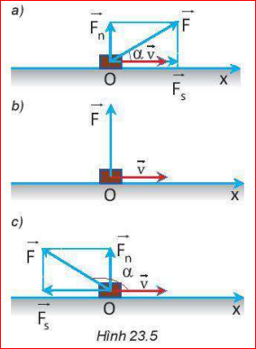

[Hình ảnh: Các động tác nâng tạ (1), (2), (3), (4)]"Trong các động tác nâng tạ từ vị trí (1) sang (2), từ (2) sang (3), từ (3) sang (4) ở hình trên: Có những quá trình truyền và chuyển hoá năng lượng nào? Động tác nào có thực hiện công, không thực hiện công?"
Ở trường THCS các em đã biết: Mọi hiện tượng xảy ra trong tự nhiên đều cần có năng lượng dưới các dạng khác nhau như: cơ năng, hoá năng, nhiệt năng, điện năng, năng lượng ánh sáng, năng lượng âm thanh, năng lượng nguyên tử. Năng lượng có thể chuyển hoá từ dạng này sang dạng khác hoặc truyền từ vật này sang vật khác.
1. Khi đun nước bằng ấm điện thì có những quá trình truyền và chuyển hoá năng lượng nào xảy ra?
Trả lời: Điện năng được chuyển hoá thành nhiệt năng làm nóng mâm nhiệt của ấm điện. Nhiệt năng này sau đó truyền vào nước, làm nhiệt độ của nước tăng lên.
2. Khi xoa hai tay vào nhau cho nóng thì có những quá trình truyền và chuyển hoá năng lượng nào xảy ra?
Trả lời: Cơ năng (động năng của tay do chuyển động xoa vào nhau) đã chuyển hóa thành nhiệt năng do ma sát giữa hai lòng bàn tay, làm tay nóng lên.
3. Một quả bóng cao su được ném từ độ cao \(h\) xuống đất cứng và bị nảy lên. Sau mỗi lần nảy lên, độ cao giảm dần (cơ năng giảm). Điều đó có trái với định luật bảo toàn năng lượng không? Tại sao?
Trả lời: Không trái với định luật bảo toàn năng lượng. Quả bóng không đạt được độ cao như cũ vì một phần cơ năng đã chuyển hóa thành nhiệt năng (do ma sát với không khí và va chạm với mặt đất) và năng lượng âm thanh.
4. Có sự truyền và chuyển hoá năng lượng nào trong quá trình bắn pháo hoa?
Trả lời: Hóa năng của thuốc súng được chuyển hóa thành động năng (đẩy pháo hoa bay lên), nhiệt năng, quang năng (ánh sáng) và âm năng (tiếng nổ).
Có thể phân năng lượng thành hai loại là động năng (năng lượng của vật do chuyển động mà có) và thế năng (năng lượng lưu trữ của vật).
Thí nghiệm mang tính lịch sử được James Joule thực hiện vào những năm 1844 - 1854. Khi cho vật nặng chuyển động đi xuống, trục quay và cánh quạt quay theo. Ma sát làm nước nóng lên. Cơ năng của vật nặng giảm đi bao nhiêu thì nhiệt năng của nước tăng lên bấy nhiêu.

[Hình 23.1: Sơ đồ thí nghiệm Joule minh hoạ định luật bảo toàn năng lượng]👉 HOẠT ĐỘNG THẢO LUẬN:
Hãy tìm thêm ví dụ minh hoạ cho các quá trình chuyển hoá năng lượng sau đây:
a) Điện năng chuyển hoá thành nhiệt năng.
b) Nhiệt năng chuyển hoá thành điện năng.
c) Quang năng chuyển hoá thành điện năng.
d) Quang năng chuyển hoá thành hoá năng.
Gợi ý:
Năng lượng có thể truyền từ vật này sang vật khác. Ví dụ: Khi đẩy cuốn sách, tay ta tác dụng lực làm nó chuyển từ đứng yên \( (v=0; W_đ=0) \) sang chuyển động nhanh dần. Sách nhận được năng lượng từ tay truyền sang.

👉 Trao đổi với bạn để chứng minh rằng trong các ví dụ mô tả ở Hình 23.3 có sự truyền năng lượng bằng cách thực hiện công:
a) Động cơ điện đưa vật nặng lên cao.
b) Hỗn hợp xăng bị đốt cháy đẩy pittông.

Lời giải:
a) Động cơ tác dụng lực kéo làm vật chuyển động từ dưới lên (thay đổi trạng thái chuyển động), tức là động cơ đã thực hiện công truyền năng lượng cho vật.
b) Khí cháy dãn nở tác dụng lực đẩy lên pittông làm pittông chuyển động, tức là chất khí đã thực hiện công truyền năng lượng cho pittông.
❓ Khi cho một miếng đồng tiếp xúc với ngọn lửa thì ngọn lửa truyền năng lượng làm miếng đồng nóng lên. Quá trình này có phải là thực hiện công không? Tại sao?
Trả lời: Không phải là thực hiện công. Quá trình này là quá trình truyền nhiệt (truyền nhiệt năng trực tiếp do chênh lệch nhiệt độ) chứ không phải dùng lực tác dụng làm thay đổi trạng thái chuyển động vĩ mô của miếng đồng.


Lực đẩy \( \vec{F} \) làm với hướng chuyển động một góc \( \alpha \) bất kì. Chỉ có thành phần lực \( \vec{F}_s \) cùng hướng chuyển động mới làm vật chuyển động, nên:
| Giá trị của góc \( \alpha \) | Đặc điểm của Lực và Công |
|---|---|
| \( 0 \le \alpha < 90^\circ \) | Lực sinh công phát động \( (A > 0) \). Lực cùng chiều với chiều chuyển động. |
| \( \alpha = 90^\circ \) | Lực vuông góc phương chuyển động, không sinh công \( (A = 0) \). |
| \( 90^\circ < \alpha \le 180^\circ \) | Lực sinh công cản \( (A < 0) \). Lực cản trở chuyển động của vật. |
Ví dụ 1: Khi rửa gầm xe ô tô, người ta sử dụng máy nâng để nâng ô tô lên độ cao \( h = 160\text{ cm} \) so với mặt sàn. Cho biết khối lượng ô tô là \( m = 1,5\text{ tấn} \) và \( g = 10\text{ m/s}^2 \). Tính công tối thiểu mà máy nâng đã thực hiện.
Giải:
Để nâng được ô tô lên thì máy nâng phải tác dụng vào ô tô lực tối thiểu bằng trọng lượng ô tô:
\( F_{min} = P = m \cdot g = 1,5 \cdot 10^3 \cdot 10 = 1,5 \cdot 10^4\text{ N} \)
Đổi: \( h = 160\text{ cm} = 1,6\text{ m} \).
Công tối thiểu mà máy nâng đã thực hiện là:
\( A = P \cdot h = 1,5 \cdot 10^4 \cdot 1,6 = 24000\text{ J} = 24\text{ kJ} \)
Ví dụ 2: Một bạn học sinh khối lượng 50 kg đi lên một cầu thang gồm 20 bậc, mỗi bậc cao 15 cm. Tính công tối thiểu mà bạn ấy phải thực hiện. Coi lực nâng là không đổi, lấy \( g = 10\text{ m/s}^2 \).
Giải:
Lực nâng tối thiểu bằng trọng lượng: \( F_{min} = P = m \cdot g \)
Tổng chiều cao bạn học sinh di chuyển được theo phương thẳng đứng là:
\( h = 20 \cdot 0,15 = 3\text{ m} \).
Công tối thiểu bạn ấy phải thực hiện là:
\( A_{min} = m \cdot g \cdot h = 50 \cdot 10 \cdot 3 = 1500\text{ J} \)
Bài 1: Một người kéo một thùng gỗ trượt trên sàn nhà bằng một sợi dây hợp với phương ngang một góc \( 60^\circ \). Lực tác dụng lên dây bằng 150 N. Tính công của lực kéo khi thùng trượt đi được quãng đường 10 m.
Lời giải:
Áp dụng công thức tính công: \( A = F \cdot s \cdot \cos\alpha \)
Thay số vào ta có: \( A = 150 \cdot 10 \cdot \cos(60^\circ) = 1500 \cdot 0,5 = 750\text{ (J)} \).
Đáp số: 750 J.
Bài 2: Một cần cẩu nâng một khối hàng có khối lượng 2 tấn lên cao 5 m theo phương thẳng đứng. Lấy \( g = 10\text{ m/s}^2 \). Lực nâng của cần cẩu sinh công là bao nhiêu?
Lời giải:
Khối lượng khối hàng: \( m = 2\text{ tấn} = 2000\text{ kg} \).
Để nâng vật lên đều, cần cẩu phải tác dụng lực nâng tối thiểu bằng trọng lượng của vật: \( F = P = m \cdot g = 2000 \cdot 10 = 20000\text{ N} \).
Vì lực kéo cùng hướng chuyển động thẳng đứng nên góc \( \alpha = 0^\circ \).
Công của lực nâng là: \( A = F \cdot s \cdot \cos(0^\circ) = 20000 \cdot 5 \cdot 1 = 100000\text{ (J)} = 100\text{ (kJ)} \).
Đáp số: 100 kJ.
Bài 3: Một động cơ thực hiện công để đẩy một xe đẩy hàng trên đoạn đường dài 25 m. Lực đẩy có cùng phương, cùng chiều chuyển động và có độ lớn là 400 N. Tính công của động cơ xe.
Lời giải:
Vì lực cùng phương, cùng chiều với hướng chuyển động nên ta dùng công thức: \( A = F \cdot s \).
Thay số vào ta có: \( A = 400 \cdot 25 = 10000\text{ (J)} \).
Đáp số: 10 kJ.